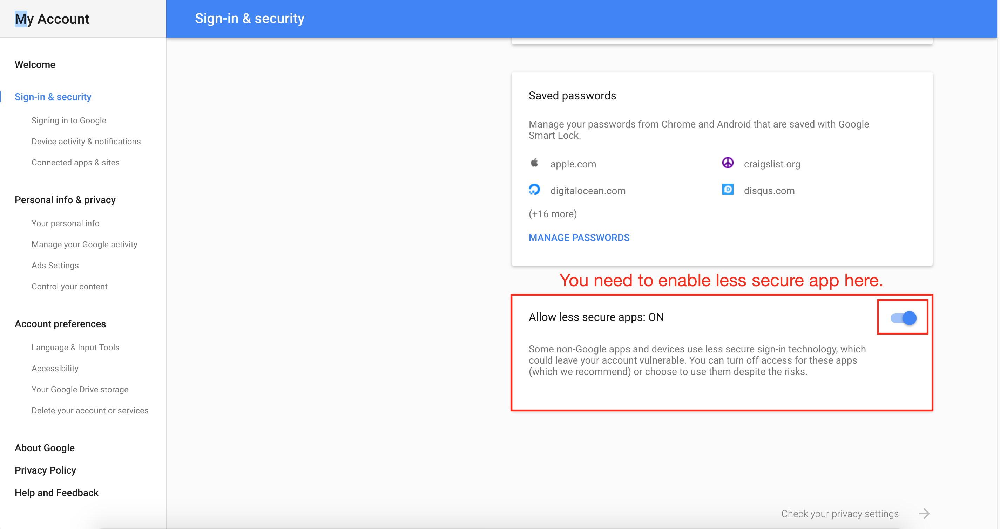

0. Mutt is Command line IMAP/POP email client.
1. If you manage many emails and love Command Line, then Mutt is excellent tool for you.
2. It is super easy to setup with Gmail
Let's dive into the steps how to setup Mutt with Gmail
1. Change Gmail Setting to support IMAP and POP
2. brew install mutt [mutt 1.6] on Mac OSX. If you don't see any error, you are good to go
If you still have trouble to connect to Gmail Server, then check Sign-in and security on your Gmail Account

Compile Mutt 1.8 with IMAP, POP and SMTP
Thu Sep 15 12:48:13 PDT 2016
Today I try to download Mutt 1.8 and try it out since there is some issue with Mutt 1.7 that I use currently.
The main screen of Mutt is frozen when computer is idle
I download the source code
run: ./configure, make and make install
It seems to be very smooth, there is no error. I ran 'mutt -v' to confirm the version is 1.8
I have my old mutt 1.7 and the ~/.muttrc file in my home directory and I assume I don't need to change any sth on my configure file
I hold my breath and run 'mutt'
Unfortunately it turns out to be not very smooth. There is error message that I have never seen it before
Error: imap_user variable is unknown
I used the older version than 1.7 before and I have similar error about IMAP
I ran 'mutt -v' again and found out IMAP, POP and SMTP are not enabled by default. Obviously the next question is how to enable them.
I try Google it around and see whether I find the answer and I have no luck after a few minutes.
I decide to take a look at the configure file and see I can find any clue.
Eventually I found out ./configure is accepted arguments which are the flags that enable/disable IMAP, POP and SMTP etc.
after I run ./configure --enable-pop --enable-imap --enable-smtp
and I run mutt again, I found there is another errors says the ssl and sasl are not enabled
It works on my Mac OSX El Capitan[10.11.4] finally
Also you need to change smtp_user to following. The previous port number is 587 with smtp in Mutt 1.7
set smtp_url = 'smtps://xxx@smtp.gmail.com:465/'
Here are the steps to build mutt with IMAP, POP, SMTP, SSL and SASL
1 download the source code mutt 1.8
2 unzip it and cd to your root directory
3 run: ./configure '--enable-hcache' '--with-sasl=yes' '--enable-pop' '--enable-imap' '--enable-smtp' '--with-ssl=/opt/local' '--with-libiconv-prefix=/opt/local' '--with-curses=/opt/local'
4 done
# Go to your Gmail Account setting and enable POP and IMAP
# run Mutt -v
# Make sure USE_POP USE_IMAP USE_SMTP are enabled
# e.g. +USE_POP +USE_IMAP +USE_SMTP are good
#
# If '-USE_POP -USE_IMAP -USE_SMTP' is shown, then you need to enable it
# Mutt 1.4 is disabled by default. If you install Mutt on Mac using Brew[brew install mutt], then
# Mutt 1.6 is installed and POP/IMAP are enabled by default
set imap_user = 'yourname@gmail.com'
set imap_pass = 'yourname'
set smtp_url = 'smtp://yourname@smtp.gmail.com:587/'
set smtp_pass = 'password'
set from = 'yourname@gmail.com'
set realname = 'name'
set folder = 'imaps://imap.gmail.com:993'
set spoolfile = '+INBOX'
set postponed = '+[Gmail]/Drafts'
set header_cache = ~/.mutt/cache/headers
set message_cachedir = ~/.mutt/cache/bodies
set certificate_file = ~/.mutt/certificates
set move = no
set smtp_authenticators = ‘gssapi:login’